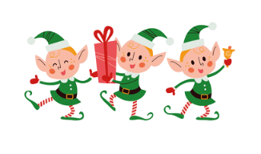

Welcome to The North Pole!
Deep in the frosty heart of the North Pole, where the snow glitters like sugar and the northern lights swirl in colorful ribbons across the sky, Santa Claus and his crew are buzzing with excitement. As Christmas draws near, his cozy red-and-white cottage glows warmly, filled with the smell of Mrs. Claus’ famous gingerbread cookies and steaming cups of cocoa. In the surrounding workshops, elves work at a joyful, frantic pace, their hammers tapping and bells jingling as they put the final touches on toys destined for children all around the world. Outside, the reindeer leap and twirl through the snow, Rudolph’s bright red nose shining like a beacon as they prepare for their big night. The air hums with anticipation, as if even the stars know that soon, the most magical night of the year will be here.
The North Pole is home to Santa Claus, Mrs. Claus, Santa's magical elves, and several mystical creatures including flying reindeer! Santa has hand-picked the very best, very bravest reindeer to pull his sleigh through the night sky, so that he can deliver all of the toys on time before any children wake up on Christmas morning. Do you know how many reindeer pull Santa's sleigh? There are eight reindeer that traditionally pull Santa's sleigh: Dasher, Dancer, Prancer, Vixen, Comet, Cupid, Donner, and Blitzen. Rudolph, the most famous reindeer of all, is often included as the ninth reindeer, known for his glowing red nose that lights the way on foggy nights. Together, these reindeer help Santa deliver presents to children all around the world on Christmas Eve!

Santa's elves are magical, joyful, and incredibly hardworking! They are the ones who make all of the toys that Santa delivers to children around the world on Christmas Eve. Elves are known for their cheerful personalities, pointy ears, and colorful clothing, often wearing green and red outfits with jingle bells. They work tirelessly in Santa's workshop, using their creativity and craftsmanship to create everything from dolls and action figures to puzzles and games. Elves also help with wrapping presents, taking care of the reindeer, and making sure everything is ready for Santa's big night. They embody the spirit of Christmas with their kindness, generosity, and love for spreading joy to children everywhere!